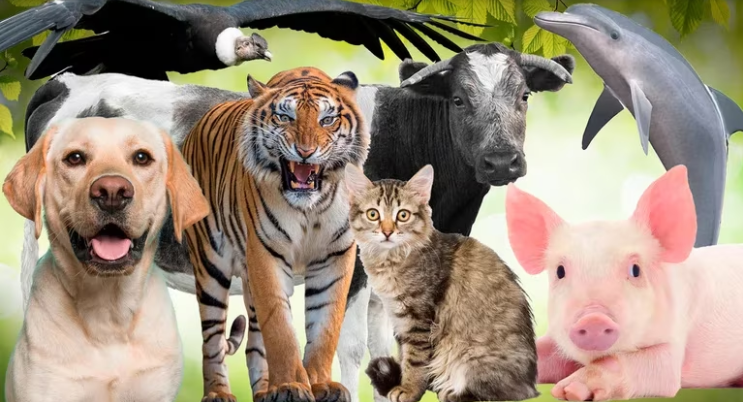
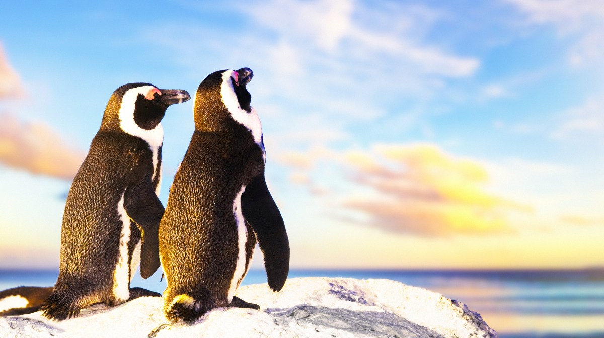

El término animal es complicado de entender porque su definición científica dista de lo que hemos aprendido en la cotidianeidad. Se ha aprendido que los animales deben moverse, reaccionar y tener una estructura con torso y patas, pero hay animales que no cumplen con estas características. Entonces, ¿cuál es la definición científica de animal? En el siguiente artículo de EcologíaVerde te explicaremos al detalle qué son los animales, además de especificarte sus características y clasificaciones según su reproducción, su hábitat o alimentación, por ejemplo.
Los animales pueden tener, o no, una estructura de soporte. Esta es la primera categoría que separa en dos a los animales. A continuación, vamos a ver más detalladamente la clasificación de los animales según su estructura vertebral, o no.
Los animales vertebrados tienen en su desarrollo embrionario la presencia de notocorda, un tipo de cordón neural, y se clasifican dentro del phylum Chordata. Dentro de la clasificación de animales vertebrados,
Por otro lado, existen los invertebrados. Este no es un phylum único, sino que se compone de varios phyla:
Los herbívoros se alimentan de plantas, que comprende un gran abanico de posibilidades. Pueden ser frugívoros, polinívoros, xilófagos, granívoros o folívoros. Los que se alimentan directamente de hojas o tallos tienen la capacidad de degradar la celulosa, un componente que suele ser muy duro.
Los animales carnívoros se alimentan únicamente de otros animales. Pueden ser depredadores activos o carroñeros. Como antagonista de los herbívoros, este grupo tampoco es de origen filogenético. Sí existe el orden Carnivora bajo la clase Mammalia o mamíferos, pero no incluye a todos los carnívoros en el sentido laxo que suele usarse el término. Esto es fácil de comprender si contemplamos que existen, por ejemplo, aves depredadoras como el águila. Son carnívoros por su tipo de alimentación pero no pertenecen al orden Carnivora. Retomando el sentido de carnívoros como antagonismo del herbivorismo, tenemos a ordenes.
La última clasificación de los animales según su alimentación se basa en todos aquellos que comen tanto a otros animales como a plantas. Esto les ayuda a ser más flexibles, una característica muy útil, por ejemplo, en animales principalmente carnívoros pero que carecen de opciones momentáneamente.